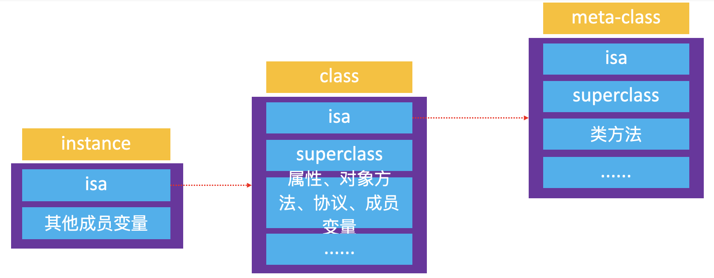
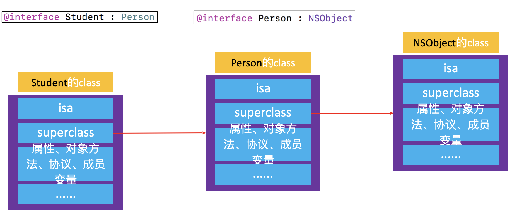
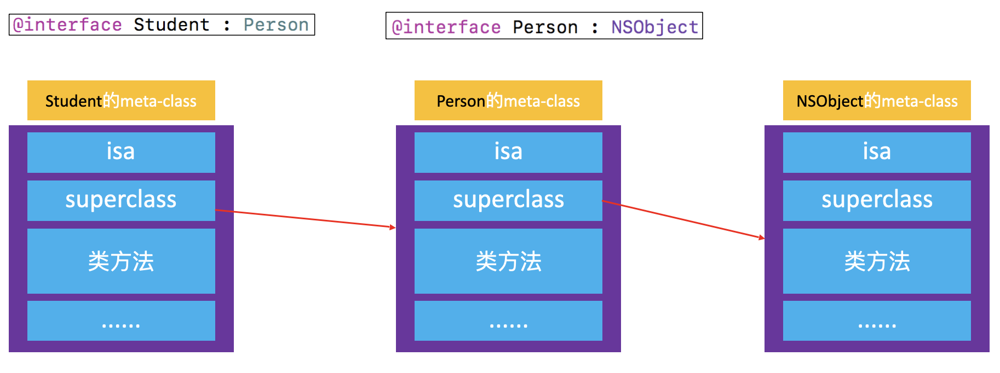
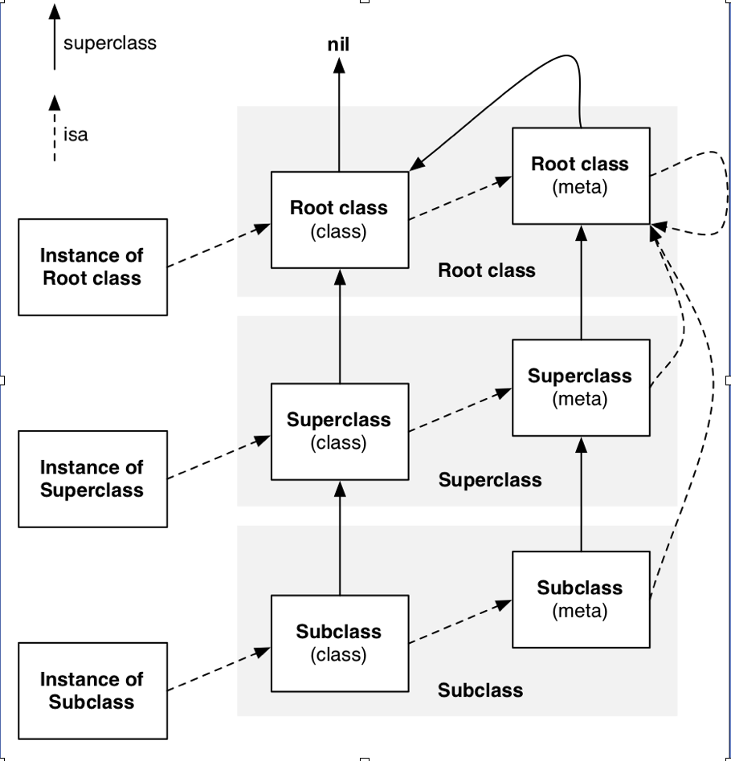

isa指针的指向问题

-
instance 的 isa 指向 class
- 当调用对象方法时，通过
instance 的 isa 找到 class，最后找到对象方法的实现进行调用
-
class 的 isa 指向 meta-class
- 当调用类方法时，通过
class 的 isa 找到 meta-class，最后找到类方法的实现进行调用
class对象的 superclass指针

当 Student 的 instance 对象要调用 Person 的对象方法时，会先通过 isa 找到 Student 的 class，然后通过
suoerclass 找到 Person 的 class，最后找到对象方法的实现进行调用
meta-class 对象的 superclass 指针

当 Student 的 class 要调用 Person 的类方法时，会先通过 isa 找到 Student 的 meta-class，然后通过
superclass 找到 Person 的 meta-class，最后找到类方法的实现进行调用
isa、superclass 总结
instance 的 isa 指向 classclass 的 isa 指向 meta-classmeta-class 的 isa 指向基类的 meta-class-
class 的 superclass 指向父类的 class
-
meta-class 的 superclass 指向父类的 meta-class
- 基类的
meta-class 的 superclass 指向基类的 class
-
instance 调用对象方法的轨迹
isa 找到 class，方法不存在，就通过 superclass 找到父类
-
class 调用类方法的轨迹
isa 找 meta-class，方法不存在，就通过 superclass 找父类
